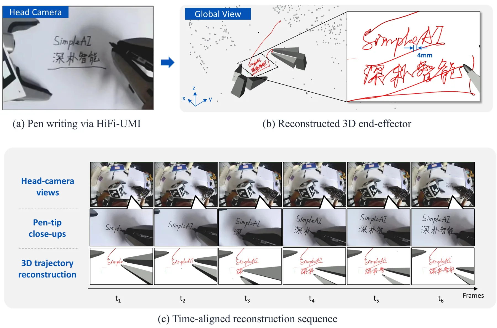
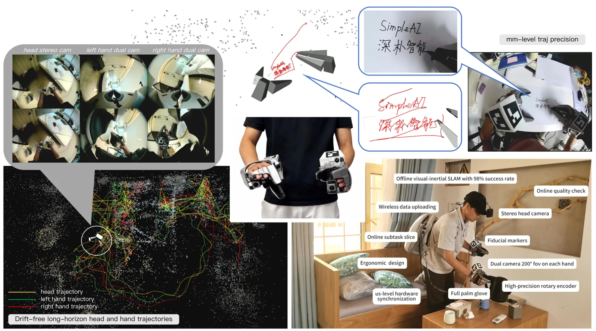

HiFi-UMI：仅用高保真 UMI 数据学习可部署操作策略HiFi-UMI: Learning Deployable Manipulation Policies from High-Fidelity UMI Data Alone
主任务是 manipulation policy，但其高精度 stereo-inertial SLAM 数据链和自动验证对定位数据生产有价值；3 mm 指标定义与全局漂移边界需核查。
一句话工作总结
以离线 stereo-inertial SLAM、原生双手相对位姿和微秒同步生产 3 mm 局部精度、2,000 小时的机器人示教数据。
摘要
HiFi-UMI 是便携式机器人示教数据生产系统，围绕 trajectory accuracy、双 gripper relative pose、同步与视场联合设计。系统采用 head-mounted offline stereo-inertial SLAM、直接测得而非重建的 relative pose、共享微秒级 GPIO trigger，以及每只手两台覆盖约 200° 的 wide-angle cameras，在无需外部 tracking infrastructure 时达到 3 mm workspace-local end-effector accuracy。仅使用 HiFi-UMI demonstrations post-training 的策略可直接部署到真实机器人，并在三种 backbone 上接近 in-domain teleoperation；开放的 HiFi-UMI-2K 包含 2,000 小时微秒同步、超宽视场示教数据，每条轨迹均通过 simulation replay 自动重建与验证。
Learning deployable manipulation policies is bottlenecked by the scarcity of data that is both high-fidelity and scalable. Real-robot teleoperation is accurate but costly to scale; robot-free UMI capture scales readily, and current practice uses the resulting data mainly for pre-training, adding a small real-robot "anchor" at post-training. We ask whether raising the fidelity of robot-free UMI data, rather than shrinking the real-robot fraction, can remove that anchor. We present HiFi-UMI, a portable UMI data-production system co-designed for trajectory accuracy, inter-gripper relative pose, synchronization, and field of view: head-mounted offline stereo-inertial SLAM, native rather than reconstructed relative pose, a shared microsecond GPIO trigger, and two wide-angle cameras per hand covering ~200 degrees. It reaches 3 mm workspace-local end-effector accuracy without external tracking infrastructure. Using this corpus, we demonstrate zero-robot post-training: a policy post-trained solely on HiFi-UMI demonstrations deploys directly on a real robot and matches in-domain teleoperation across three backbones spanning the vision-language-action and world-action-model families, with success-rate differences of -2.5, +3.1, and -0.6 percentage points on StarVLA-QwenPI, OpenPI-pi_0.5, and LingBot-VA; the strongest policy reaches 85% on a precision insertion task, even though the teleoperation baseline is collected in the evaluation scene and no HiFi-UMI trajectory is. Pre-training on 4,000 hours from the same corpus lowers action error on ten unseen tasks by 41% and, on StarVLA-QwenPI, raises real-robot success by a further 18.1 percentage points. We open-source HiFi-UMI-2K, 2,000 hours of microsecond-synchronized, ultra-wide-FoV demonstrations, each automatically reconstructed and validated through simulation replay, as a large-scale, high-fidelity resource for the robot-learning community.
中文解读摘录
- 作者：Yuteng Wei, Jinming Ma, Jiawei Wang, Weitao Zhou, Yushen Zuo, Ke Rui 等
- 价值判断：定位算法不是主贡献，但其 head-mounted offline stereo-inertial SLAM、原生双手相对位姿和微秒级同步组成了值得关注的数据生产链。
- 结果与边界：摘要称 workspace-local end-effector accuracy 达 3 mm，并开放 2,000 小时数据；仅用 HiFi-UMI post-training 的策略可直接部署。需核查 3 mm 的定义、全局漂移、自动 reconstruction validation 和快速运动/遮挡条件。
- 链接：arXiv · PDF
图表/页面预览

{kind=link}

{kind=link}
